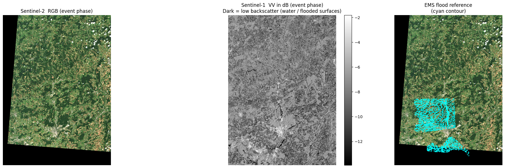

Notebook 2 — Data Packaging¶
Author: Eun-Kyeong Kim (eun-kyeong.kim@lxp.lu), LuxProvide S.A
Multimodal Flood Inference with TerraMind on MeluXina HPC¶
Goal: Read the acquisition manifest produced by Notebook 1, download and reproject each satellite asset onto a common analysis grid, and write analysis-ready NumPy arrays plus a chip index to disk.
What you will learn¶
- How to reproject multi-source rasters onto a shared UTM grid with
rasterio - How array dimensions are organised for multi-modal, multi-temporal data
- How to extract fixed-size spatial "chips" for deep-learning inference
Data flow¶
manifest JSON ──► download & reproject ──► full-scene arrays (.npy)
──► valid pixel mask (.npy)
──► [optional] flood label (.npy)
──► chip index (.csv)
1 · Imports¶
Key packages:
rasterio— reads geospatial rasters and performs reprojectionnumpy— array storage and manipulationtqdm— progress bars for long downloadsmatplotlib— quick visual sanity-checks at the end
from __future__ import annotations
import json
import math
from pathlib import Path
import geopandas as gpd
import matplotlib.pyplot as plt
import numpy as np
import pandas as pd
import planetary_computer
import pystac_client
import rasterio
from rasterio import features
from rasterio.enums import Resampling
from rasterio.transform import from_bounds
from rasterio.warp import reproject
from shapely.geometry import box
from tqdm.auto import tqdm
2 · Configuration¶
Most parameters are inherited from the manifest written by Notebook 1. The only new ones here relate to the analysis grid and chip extraction.
| Variable | Meaning |
|---|---|
TARGET_RESOLUTION |
Pixel spacing of the output grid in metres |
CHIP_SIZE |
Side length of each spatial chip in pixels |
CHIP_STRIDE |
Step between chip origins in pixels (< CHIP_SIZE → overlapping chips) |
MIN_CHIP_VALID_FRAC |
Minimum fraction of valid (non-NaN) pixels required to keep a chip |
FORCE_REBUILD_* |
Set to True to re-download / re-compute even if cached files exist |
# ── Paths ────────────────────────────────────────────────────────────────────
ROOT = Path("data/terramind_flood_lux")
META_ROOT = ROOT / "metadata"
PACKAGE_ROOT = ROOT / "package"
FULL_ROOT = PACKAGE_ROOT / "full_scene"
FULL_ROOT.mkdir(parents=True, exist_ok=True)
# ── Load acquisition manifest ─────────────────────────────────────────────
# This file was created by Notebook 1 and tells us exactly which satellite
# scenes to download and which bands to use.
manifest = json.loads((META_ROOT / "multimodal_acquisition_manifest.json").read_text())
EVENT = manifest["event"]
PHASE_ORDER = manifest["phase_order"]
# ── Grid parameters ──────────────────────────────────────────────────────
TARGET_CRS = EVENT.get("target_crs", "EPSG:32632") # UTM zone 32N
TARGET_RESOLUTION = 10 # metres — matches Sentinel-2's 10 m native bands
# ── Chip (patch) extraction parameters ───────────────────────────────────
CHIP_SIZE = 256 # pixels — spatial input size expected by TerraMind
CHIP_STRIDE = 208 # pixels — step between chip origins (48 px overlap)
MIN_CHIP_VALID_FRAC = 0.80 # drop chips with >20 % NaN pixels
# ── Band lists (inherited from the manifest) ──────────────────────────────
S2_BANDS = manifest["assets"]["S2L2A"] # 12 Sentinel-2 bands
S1_BANDS = manifest["assets"]["S1RTC"] # ["vv", "vh"]
# ── Output file paths ─────────────────────────────────────────────────────
# Arrays are stored as memory-mapped .npy files for fast random access.
S1RTC_PATH = FULL_ROOT / "S1RTC_full.npy"
S2L2A_PATH = FULL_ROOT / "S2L2A_full.npy"
DEM_PATH = FULL_ROOT / "DEM_full.npy"
VALID_MASK_PATH = FULL_ROOT / "valid_mask_full.npy"
FULL_META_PATH = FULL_ROOT / "luxembourg_multimodal_4step_full_scene.json"
LABEL_PATH = FULL_ROOT / "luxembourg_label_max_flood.npy"
CHIP_MANIFEST_PATH = PACKAGE_ROOT / "chip_manifest_multimodal.csv"
# ── Cache flags ───────────────────────────────────────────────────────────
# Set to True if you want to re-download and reprocess from scratch.
FORCE_REBUILD_FULL = False
FORCE_REBUILD_CHIP_MANIFEST = False
# ── STAC catalogue (needed to re-sign expired asset URLs) ────────────────
catalog = pystac_client.Client.open(
"https://planetarycomputer.microsoft.com/api/stac/v1",
modifier=planetary_computer.sign_inplace,
)
3 · Build the target analysis grid¶
All three data sources (S1, S2, DEM) come in different native projections, resolutions, and extents. To feed them to a single neural network we must reproject everything onto an identical pixel grid.
build_target_grid() projects the WGS-84 bounding box into UTM, then defines
a regular grid at TARGET_RESOLUTION metres per pixel. Every subsequent
reproject_asset_to_grid() call warps a single raster band onto this grid.
def fetch_item(collection: str, item_id: str):
"""Retrieve a single STAC item by collection + ID (re-signs URLs automatically)."""
items = list(catalog.search(collections=[collection], ids=[item_id]).items())
if not items:
raise KeyError(f"Item '{item_id}' not found in collection '{collection}'.")
return items[0]
def build_target_grid() -> dict:
"""Project the ROI bounding box to UTM and return grid metadata.
Returns a dict with keys: crs, transform, width, height, bounds.
The rasterio `transform` maps pixel coordinates to UTM coordinates.
"""
# Reproject the WGS-84 bounding box to the target UTM CRS
roi = gpd.GeoDataFrame(
{"geometry": [box(*EVENT["bbox"])]}, crs="EPSG:4326"
).to_crs(TARGET_CRS)
minx, miny, maxx, maxy = roi.total_bounds
# Compute grid dimensions (ceil so the ROI is fully covered)
width = int(math.ceil((maxx - minx) / TARGET_RESOLUTION))
height = int(math.ceil((maxy - miny) / TARGET_RESOLUTION))
# Affine transform: maps (col, row) → (easting, northing)
transform = from_bounds(minx, miny, maxx, maxy, width, height)
return {
"crs": TARGET_CRS,
"transform": transform,
"width": width,
"height": height,
"bounds": [float(minx), float(miny), float(maxx), float(maxy)],
}
grid = build_target_grid()
print(f"Analysis grid: {grid['width']} × {grid['height']} px "
f"@ {TARGET_RESOLUTION} m/px ({TARGET_CRS})")
grid
Analysis grid: 6033 × 8449 px @ 10 m/px (EPSG:32632)
{'crs': 'EPSG:32632',
'transform': Affine(np.float64(9.999522215554327), np.float64(0.0), np.float64(263209.339809777),
np.float64(0.0), np.float64(-9.999990001154945), np.float64(5564086.599782167)),
'width': 6033,
'height': 8449,
'bounds': [263209.339809777,
5479596.684262409,
323536.45733621623,
5564086.599782167]}
4 · Reprojection and loading helpers¶
reproject_asset_to_grid() is the workhorse: it opens a single raster band from a
signed cloud URL and warps it to the target grid using bilinear interpolation.
No-data pixels become NaN.
The phase-level loaders (load_s1_phase, load_s2_phase) call this for each band
and stack the results along the channel axis.
def reproject_asset_to_grid(
asset_href: str,
grid: dict,
resampling: Resampling = Resampling.bilinear,
dtype: str = "float32",
) -> np.ndarray:
"""Download one raster band and reproject it onto *grid*.
Parameters
----------
asset_href : signed URL to a Cloud-Optimised GeoTIFF asset
grid : output of `build_target_grid()`
resampling : interpolation method (bilinear is a safe default)
dtype : NumPy dtype of the output array
Returns
-------
2-D array of shape (grid['height'], grid['width']), with NaN for no-data.
"""
with rasterio.open(asset_href) as src:
destination = np.full(
(grid["height"], grid["width"]), np.nan, dtype=dtype
)
reproject(
source=rasterio.band(src, 1),
destination=destination,
src_transform=src.transform,
src_crs=src.crs,
src_nodata=src.nodata,
dst_transform=grid["transform"],
dst_crs=grid["crs"],
dst_nodata=np.nan,
resampling=resampling,
)
return destination
def phase_item(phase: str, modality: str):
"""Fetch the STAC item that was selected for *phase* and *modality* in Notebook 1."""
entry = manifest["selected"][phase][modality]
return fetch_item(entry["collection"], entry["id"])
def load_s1_phase(phase: str) -> np.ndarray:
"""Download and reproject S1 VV + VH for one temporal phase.
Returns shape: (2, H, W) — channel dimension = [VV, VH].
"""
item = phase_item(phase, "S1RTC")
vv = reproject_asset_to_grid(item.assets["vv"].href, grid)
vh = reproject_asset_to_grid(item.assets["vh"].href, grid)
return np.stack([vv, vh], axis=0).astype("float32")
def load_s2_phase(phase: str) -> np.ndarray:
"""Download and reproject all 12 S2 bands for one temporal phase.
Returns shape: (12, H, W) — one slice per band in S2_BANDS order.
"""
item = phase_item(phase, "S2L2A")
band_arrays = [
reproject_asset_to_grid(item.assets[band].href, grid)
for band in S2_BANDS
]
return np.stack(band_arrays, axis=0).astype("float32")
def load_dem() -> np.ndarray:
"""Mosaic all DEM tiles covering the ROI and return a single elevation array.
Multiple tiles are averaged over overlapping regions (nanmean).
Returns shape: (1, H, W) — single elevation channel.
"""
dem_entries = manifest.get("dem_items", [])
if not dem_entries:
raise KeyError(
"No DEM entries in manifest. Re-run Notebook 1 and check "
"multimodal_acquisition_manifest.json."
)
tile_arrays = []
for entry in tqdm(dem_entries, desc="Loading DEM tiles", leave=False):
dem_item = fetch_item(entry["collection"], entry["id"])
tile_arrays.append(
reproject_asset_to_grid(dem_item.assets["data"].href, grid)
)
# Stack tiles → (n_tiles, H, W) then collapse with nanmean
dem_mosaic = np.nanmean(
np.stack(tile_arrays, axis=0).astype("float32"),
axis=0,
dtype="float32",
)
return dem_mosaic[None, ...] # add channel axis → (1, H, W)
5 · Build and cache full-scene arrays¶
save_full_scene_arrays() loops over all four temporal phases, calls the loading
helpers, and stacks everything into 4-D arrays:
S1RTC : (C=2, T=4, H, W) — 2 polarisations × 4 phases
S2L2A : (C=12, T=4, H, W) — 12 bands × 4 phases
DEM : (C=1, H, W) — static (no time axis yet)
Why cache? Downloading and reprojecting ~10 GeoTIFFs from a cloud catalogue can take several minutes. The
FORCE_REBUILD_FULL = Falseflag skips this work if the.npyfiles already exist on disk.
def save_full_scene_arrays(force: bool = False):
"""Download, reproject and stack all modalities; return memory-mapped arrays.
If cached `.npy` files already exist and *force* is False, the files are
memory-mapped (fast, zero-copy) rather than re-downloaded.
Returns
-------
s1rtc : (2, 4, H, W) float32 — SAR backscatter
s2l2a : (12, 4, H, W) float32 — optical reflectance
dem_once : (1, H, W) float32 — elevation
valid_mask : (H, W) uint8 — 1 where all modalities have valid data
"""
# ── Fast path: load from cache ────────────────────────────────────────
cached_files = [S1RTC_PATH, S2L2A_PATH, DEM_PATH, VALID_MASK_PATH, FULL_META_PATH]
if (not force) and all(p.exists() for p in cached_files):
s1rtc = np.load(S1RTC_PATH, mmap_mode="r")
s2l2a = np.load(S2L2A_PATH, mmap_mode="r")
dem_once = np.load(DEM_PATH, mmap_mode="r")
valid_mask = np.load(VALID_MASK_PATH, mmap_mode="r")
print("Loaded cached full-scene arrays from disk.")
return s1rtc, s2l2a, dem_once, valid_mask
# ── Slow path: download and reproject all scenes ─────────────────────
# Sentinel-1: loop over phases, stack along new time axis → (2, 4, H, W)
s1_phases = [load_s1_phase(phase) for phase in tqdm(PHASE_ORDER, desc="Downloading S1RTC")]
s1rtc = np.stack(s1_phases, axis=1).astype("float32")
# Sentinel-2: same pattern → (12, 4, H, W)
s2_phases = [load_s2_phase(phase) for phase in tqdm(PHASE_ORDER, desc="Downloading S2L2A")]
s2l2a = np.stack(s2_phases, axis=1).astype("float32")
# DEM: static, no time loop → (1, H, W)
print("Downloading DEM...")
dem_once = load_dem().astype("float32")
print("DEM ready.")
# ── Valid pixel mask ──────────────────────────────────────────────────
# A pixel is 'valid' if every modality has a finite value at that location.
# Shape: (H, W), dtype uint8 (1 = valid, 0 = masked)
valid_mask = (
np.isfinite(s1rtc).all(axis=(0, 1)) # all S1 channels and phases finite
& np.isfinite(s2l2a).all(axis=(0, 1)) # all S2 channels and phases finite
& np.isfinite(dem_once).all(axis=0) # elevation finite
).astype("uint8")
# ── Save to disk ──────────────────────────────────────────────────────
np.save(S1RTC_PATH, s1rtc)
np.save(S2L2A_PATH, s2l2a)
np.save(DEM_PATH, dem_once)
np.save(VALID_MASK_PATH, valid_mask)
full_meta = {
"crs": TARGET_CRS,
"transform": list(grid["transform"])[:6],
"width": grid["width"],
"height": grid["height"],
"bounds": grid["bounds"],
"phase_order": PHASE_ORDER,
"s1_bands": S1_BANDS,
"s2_bands": S2_BANDS,
"chip_size": CHIP_SIZE,
"chip_stride": CHIP_STRIDE,
"min_chip_valid_frac": MIN_CHIP_VALID_FRAC,
"full_files": {
"S1RTC": str(S1RTC_PATH),
"S2L2A": str(S2L2A_PATH),
"DEM": str(DEM_PATH),
"valid_mask": str(VALID_MASK_PATH),
},
}
FULL_META_PATH.write_text(json.dumps(full_meta, indent=2))
print("Full-scene arrays saved to disk.")
return s1rtc, s2l2a, dem_once, valid_mask
s1rtc, s2l2a, dem_once, valid_mask = save_full_scene_arrays(force=FORCE_REBUILD_FULL)
print(f"\nArray shapes and types:")
print(f" S1RTC : {s1rtc.shape} {s1rtc.dtype} (bands, time-steps, H, W)")
print(f" S2L2A : {s2l2a.shape} {s2l2a.dtype} (bands, time-steps, H, W)")
print(f" DEM : {dem_once.shape} {dem_once.dtype} (1 channel, H, W)")
print(f" valid_mask : {valid_mask.shape} {valid_mask.dtype} — {float(np.asarray(valid_mask).mean()):.1%} of pixels are valid")
Loaded cached full-scene arrays from disk.
Array shapes and types:
S1RTC : (2, 4, 8449, 6033) float32 (bands, time-steps, H, W)
S2L2A : (12, 4, 8449, 6033) float32 (bands, time-steps, H, W)
DEM : (1, 8449, 6033) float32 (1 channel, H, W)
valid_mask : (8449, 6033) uint8 — 80.5% of pixels are valid
6 · Load optional flood reference label (Copernicus EMS)¶
The Copernicus Emergency Management Service (EMS) produced a vector flood
delineation for the July 2021 event. If the geodatabase file
data/terramind_flood_lux/labels/EMSN139_STD_UTM32N_v01.gdb is present, this cell
rasterises the maximum flood extent onto the analysis grid and saves it as
luxembourg_label_max_flood.npy.
If the file is absent the cell prints None and execution continues — the
label is not required for inference, only for the optional visualisation below.
def load_optional_ems_label():
"""Rasterise the Copernicus EMS flood layer if the geodatabase is on disk.
Returns a uint8 array (H, W) with 1 = flooded, 0 = dry, or None if the
file is not found.
"""
gdb_path = Path("data/terramind_flood_lux/labels/EMSN139_STD_UTM32N_v01.gdb")
if not gdb_path.exists():
print("EMS geodatabase not found — skipping label generation.")
return None
# Try layers in preference order (maximum flood extent first)
preferred_layers = [
"P06TMFL01_MaxFloodExtent",
"EMSN139_STD_UTM32N_P06TMFL_FloodTempEvolution_15072021",
"EMSN139_STD_UTM32N_P06TMFL_FloodTempEvolution_16072021",
"EMSN139_STD_UTM32N_P06TMFL_FloodTempEvolution_17072021",
"EMSN139_STD_UTM32N_P04FLDEL01_FloodExtent",
"EMSN139_STD_UTM32N_P04FLDEL02_FloodExtent",
]
flood_gdf, chosen_layer = None, None
for layer in preferred_layers:
try:
gdf = gpd.read_file(gdb_path, layer=layer)
if not gdf.empty:
flood_gdf, chosen_layer = gdf, layer
break
except Exception:
continue
if flood_gdf is None:
print("No usable flood layer found in the geodatabase.")
return None
# Reproject to the analysis CRS and burn polygons to a binary raster
flood_gdf = flood_gdf.to_crs(grid["crs"])
flood_mask = features.rasterize(
[(geom, 1) for geom in flood_gdf.geometry
if geom is not None and not geom.is_empty],
out_shape=(grid["height"], grid["width"]),
transform=grid["transform"],
fill=0,
dtype="uint8",
)
np.save(LABEL_PATH, flood_mask)
print(f"Flood label saved ({chosen_layer})")
print(f" Flooded fraction : {float(flood_mask.mean()):.3%}")
return flood_mask
# Load from cache if already saved, otherwise generate from the geodatabase
flood_label = (
np.load(LABEL_PATH)
if LABEL_PATH.exists()
else load_optional_ems_label()
)
print(
"flood_label:",
None if flood_label is None
else {"shape": flood_label.shape, "positive_frac": float(flood_label.mean())},
)
flood_label: {'shape': (8449, 6033), 'positive_frac': 0.013422821030275804}
7 · Build chip index (sliding-window extraction)¶
Deep-learning models like TerraMind work on fixed-size spatial patches ("chips").
build_chip_manifest() slides a CHIP_SIZE × CHIP_SIZE window over the full scene
in steps of CHIP_STRIDE pixels and records each valid chip's pixel coordinates.
Chips that contain too many NaN pixels (< MIN_CHIP_VALID_FRAC valid) are dropped.
The result is a CSV with one row per chip: its unique ID, bounding pixel indices,
and quality metrics.
Overlap:
CHIP_SIZE=256withCHIP_STRIDE=208means adjacent chips share 48 pixels of overlap. This ensures the model sees every region at slightly different spatial offsets, reducing boundary artefacts.
def build_chip_manifest(force: bool = False) -> pd.DataFrame:
"""Slide a window over the full scene and record valid chip locations.
Returns a DataFrame with columns:
chip_id, row0, row1, col0, col1, chip_valid_fraction, label_fraction
"""
if CHIP_MANIFEST_PATH.exists() and not force:
chip_df = pd.read_csv(CHIP_MANIFEST_PATH)
print(f"Loaded cached chip manifest ({len(chip_df)} chips).")
return chip_df
H, W = grid["height"], grid["width"]
chip_rows = []
# Count valid windows first so the progress bar is accurate
n_windows = sum(
1
for row0 in range(0, max(H - CHIP_SIZE + 1, 1), CHIP_STRIDE)
for col0 in range(0, max(W - CHIP_SIZE + 1, 1), CHIP_STRIDE)
if (min(row0 + CHIP_SIZE, H) - row0 == CHIP_SIZE
and min(col0 + CHIP_SIZE, W) - col0 == CHIP_SIZE)
)
with tqdm(total=n_windows, desc="Indexing chips") as pbar:
for row0 in range(0, max(H - CHIP_SIZE + 1, 1), CHIP_STRIDE):
for col0 in range(0, max(W - CHIP_SIZE + 1, 1), CHIP_STRIDE):
row1 = min(row0 + CHIP_SIZE, H)
col1 = min(col0 + CHIP_SIZE, W)
# Skip partial chips at the scene boundary
if row1 - row0 != CHIP_SIZE or col1 - col0 != CHIP_SIZE:
continue
pbar.update(1)
# Fraction of valid pixels in this chip
chip_valid_frac = float(
np.asarray(valid_mask[row0:row1, col0:col1])
.astype(bool).mean()
)
# Drop chips that are mostly NaN (e.g., at the edge of the swath)
if chip_valid_frac < MIN_CHIP_VALID_FRAC:
continue
# Optional: fraction of flood pixels in the reference label
label_frac = None
if flood_label is not None:
label_frac = float(
np.asarray(flood_label[row0:row1, col0:col1]).mean()
)
chip_rows.append({
"chip_id": f"lux_{row0:05d}_{col0:05d}",
"row0": row0, "row1": row1,
"col0": col0, "col1": col1,
"chip_valid_fraction": chip_valid_frac,
"label_fraction": label_frac,
})
chip_df = pd.DataFrame(chip_rows)
chip_df.to_csv(CHIP_MANIFEST_PATH, index=False)
print(f"Chip manifest saved: {len(chip_df)} valid chips → {CHIP_MANIFEST_PATH}")
return chip_df
chip_df = build_chip_manifest(force=FORCE_REBUILD_CHIP_MANIFEST)
print(f"Total valid chips : {len(chip_df)}")
chip_df.head()
Loaded cached chip manifest (890 chips).
Total valid chips : 890
| chip_id | chip_path | row0 | row1 | col0 | col1 | chip_valid_fraction | flood_fraction | |
|---|---|---|---|---|---|---|---|---|
| 0 | lux_00000_00832 | data/terramind_flood_lux/package/chips/lux_000... | 0 | 256 | 832 | 1088 | 0.987473 | NaN |
| 1 | lux_00000_01040 | data/terramind_flood_lux/package/chips/lux_000... | 0 | 256 | 1040 | 1296 | 1.000000 | NaN |
| 2 | lux_00000_01248 | data/terramind_flood_lux/package/chips/lux_000... | 0 | 256 | 1248 | 1504 | 1.000000 | NaN |
| 3 | lux_00000_01456 | data/terramind_flood_lux/package/chips/lux_000... | 0 | 256 | 1456 | 1712 | 1.000000 | NaN |
| 4 | lux_00000_01664 | data/terramind_flood_lux/package/chips/lux_000... | 0 | 256 | 1664 | 1920 | 1.000000 | NaN |
8 · Quick sanity check: event snapshot¶
Before moving on, let's look at the event-phase data to confirm the download and reprojection worked correctly.
- Left: Sentinel-2 true-colour RGB (bands B04/B03/B02).
- Centre: Sentinel-1 VV channel in dB. Water appears dark (specular reflection scatters energy away from the sensor); flooded areas stand out against brighter land.
- Right (if label available): Reference EMS flood outline overlaid on the RGB.
event_idx = PHASE_ORDER.index("event") # time-step index for the flood peak
# ── S2 RGB ────────────────────────────────────────────────────────────────
# Stack B04 (red), B03 (green), B02 (blue) for a natural-colour composite
rgb = np.stack(
[
np.asarray(s2l2a[S2_BANDS.index("B04"), event_idx]),
np.asarray(s2l2a[S2_BANDS.index("B03"), event_idx]),
np.asarray(s2l2a[S2_BANDS.index("B02"), event_idx]),
],
axis=-1,
).astype("float32")
# Normalise to [0, 1] using the 98th percentile to avoid blowouts
rgb_finite = np.isfinite(rgb).all(axis=-1)
rgb = np.nan_to_num(rgb, nan=0.0)
if rgb_finite.any():
scale = np.percentile(rgb[rgb_finite], 98)
if scale > 0:
rgb = np.clip(rgb / scale, 0, 1)
# ── S1 VV in decibels ────────────────────────────────────────────────────
vv = np.asarray(s1rtc[0, event_idx]).astype("float32")
vv_finite = np.isfinite(vv) & (vv > 0)
vv_db = np.full_like(vv, np.nan)
vv_db[vv_finite] = 10.0 * np.log10(vv[vv_finite])
vv_ma = np.ma.masked_invalid(vv_db)
vv_vmin, vv_vmax = (
(-25, 5) if not np.isfinite(vv_db).any()
else np.nanpercentile(vv_db[np.isfinite(vv_db)], [2, 98])
)
# ── Plot ─────────────────────────────────────────────────────────────────
ncols = 3 if LABEL_PATH.exists() else 2
fig, axes = plt.subplots(1, ncols, figsize=(7 * ncols, 6))
axes[0].imshow(rgb)
axes[0].set_title("Sentinel-2 RGB (event phase)")
axes[0].axis("off")
im = axes[1].imshow(vv_ma, cmap="gray", vmin=vv_vmin, vmax=vv_vmax)
axes[1].set_title("Sentinel-1 VV in dB (event phase)\n"
"Dark = low backscatter (water / flooded surfaces)")
axes[1].axis("off")
plt.colorbar(im, ax=axes[1], fraction=0.046, pad=0.04)
if LABEL_PATH.exists():
axes[2].imshow(rgb)
axes[2].contour(np.load(LABEL_PATH), levels=[0.5], colors="cyan", linewidths=0.6)
axes[2].set_title("EMS flood reference\n(cyan contour)")
axes[2].axis("off")
plt.tight_layout()
plt.show()
valid = np.asarray(valid_mask).astype(bool)
print(f"Valid pixel fraction (all modalities): {float(valid.mean()):.1%}")

Valid pixel fraction (all modalities): 80.5%
9 · Full multimodal alignment overview¶
This grid shows all four temporal phases × five data layers. It lets you visually verify that the scenes are correctly co-registered and that temporal changes (especially in the SAR channels) are apparent around the flood event.
Columns: S2 RGB · S1 VV (dB) · S1 VH (dB) · DEM · valid mask
def linear_stretch(array: np.ndarray, mask: np.ndarray | None = None,
p_low: float = 2, p_high: float = 98) -> np.ndarray:
"""Stretch array values to [0, 1] using percentile clipping.
Useful for visualising images with very different dynamic ranges.
"""
array = array.astype("float32")
if mask is None:
mask = np.isfinite(array)
if mask.sum() == 0:
return np.zeros_like(array)
lo, hi = np.nanpercentile(array[mask], [p_low, p_high])
if not (np.isfinite(lo) and np.isfinite(hi) and hi > lo):
return np.zeros_like(array)
return np.clip((array - lo) / (hi - lo), 0, 1)
dem_2d = np.asarray(dem_once[0]) # squeeze channel axis for display
fig, axes = plt.subplots(len(PHASE_ORDER), 5,
figsize=(20, 4 * len(PHASE_ORDER)),
squeeze=False)
for row_idx, phase in enumerate(PHASE_ORDER):
t = PHASE_ORDER.index(phase) # time-step index
# ── S2 RGB ────────────────────────────────────────────────────────────
rgb_t = np.stack(
[np.asarray(s2l2a[S2_BANDS.index("B04"), t]),
np.asarray(s2l2a[S2_BANDS.index("B03"), t]),
np.asarray(s2l2a[S2_BANDS.index("B02"), t])],
axis=-1,
).astype("float32")
rgb_fin = np.isfinite(rgb_t).all(axis=-1)
rgb_t = np.nan_to_num(rgb_t, nan=0.0)
if rgb_fin.any():
scale = np.percentile(rgb_t[rgb_fin], 98)
if scale > 0:
rgb_t = np.clip(rgb_t / scale, 0, 1)
# ── S1 VV / VH in dB ──────────────────────────────────────────────────
vv_t, vh_t = (np.asarray(s1rtc[c, t]).astype("float32") for c in range(2))
vv_db_t = np.full_like(vv_t, np.nan)
vh_db_t = np.full_like(vh_t, np.nan)
vv_ok = np.isfinite(vv_t) & (vv_t > 0)
vh_ok = np.isfinite(vh_t) & (vh_t > 0)
vv_db_t[vv_ok] = 10.0 * np.log10(vv_t[vv_ok])
vh_db_t[vh_ok] = 10.0 * np.log10(vh_t[vh_ok])
vv_min, vv_max = ((-25, 5) if not np.isfinite(vv_db_t).any()
else np.nanpercentile(vv_db_t[np.isfinite(vv_db_t)], [2, 98]))
vh_min, vh_max = ((-30, 0) if not np.isfinite(vh_db_t).any()
else np.nanpercentile(vh_db_t[np.isfinite(vh_db_t)], [2, 98]))
# ── Plot row ──────────────────────────────────────────────────────────
label = phase.replace("_", " ")
axes[row_idx, 0].imshow(rgb_t)
axes[row_idx, 0].set_title(f"{label} | S2 RGB"); axes[row_idx, 0].axis("off")
im1 = axes[row_idx, 1].imshow(np.ma.masked_invalid(vv_db_t),
cmap="gray", vmin=vv_min, vmax=vv_max)
axes[row_idx, 1].set_title(f"{label} | S1 VV (dB)"); axes[row_idx, 1].axis("off")
plt.colorbar(im1, ax=axes[row_idx, 1], fraction=0.046, pad=0.04)
im2 = axes[row_idx, 2].imshow(np.ma.masked_invalid(vh_db_t),
cmap="gray", vmin=vh_min, vmax=vh_max)
axes[row_idx, 2].set_title(f"{label} | S1 VH (dB)"); axes[row_idx, 2].axis("off")
plt.colorbar(im2, ax=axes[row_idx, 2], fraction=0.046, pad=0.04)
axes[row_idx, 3].imshow(linear_stretch(dem_2d, mask=np.isfinite(dem_2d)), cmap="terrain")
axes[row_idx, 3].set_title(f"{label} | DEM"); axes[row_idx, 3].axis("off")
axes[row_idx, 4].imshow(np.asarray(valid_mask).astype(bool), cmap="gray", vmin=0, vmax=1)
axes[row_idx, 4].set_title(f"{label} | valid mask"); axes[row_idx, 4].axis("off")
plt.suptitle("Multimodal alignment check — all phases", fontsize=14, y=1.01)
plt.tight_layout()
plt.show()